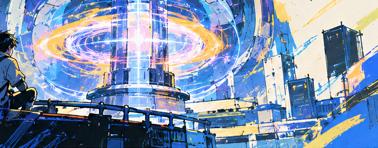

— Progress
进展
本页只发布已经归档的事。
当前阶段:装置侧还没有装置 —— 设计侧已经有一条路在跑
装置侧还没有装置:技术逻辑与路线已确立(反引力场 / 无噪音能源),当前处在判据规范这一步(先把判据、诊断方案与零假设基准写死,再谈采购与建造),实验进展、指标数值与归档记录都还没有,待立项后按条目发布,不预先填充。设计侧不同 —— 已经有一台在跑的机器(FORGE),它的每一个数都在下面,而且都能被重新算出来。
Not built yet · device Running · FORGE v0.1.0
— 01 · 技术
技术逻辑是反引力场,终点是飞行器
本项目的技术逻辑是反引力场。近期要拿到的是没有噪音的能源与安静无声的动力源;核心动机与终局愿景是物质质量归零后的引力场相变,以及可以控制引力场的飞行器与交通设施。下面两条是公开的技术方向。

Time-Varying Gravitational Field
- 角色
- 本项目的技术逻辑。
- 公开细节
- 引力在此框架里不是实体,而是空间场的泛函:Φ = ½|C|²,引力加速度 = −∇Φ;所以「控制引力」= 「控制流动的梯度结构」。代数一侧的账在文档区第一册。
AI Control
- 角色
- 项目海报上列出的方向之一:电磁场持续学习的 AI 系统。
- 公开细节
- 已经有一台在跑 —— FORGE,见下一节。它不训练等离子体,而是先替装置把「线圈怎么摆」这件事搜出来。
噪音抑制是要拿到的东西,不是技术线 —— 所以它不在这几栏里。
— 02 · FORGE
FORGE v0.1.0:一个不断产生、验证、淘汰下一代线圈设计的系统
它不是这一台装置,是产生装置设计的机器。v0.1.0 的目标只有一个:机器能不能找到一个比人工设计更好的电磁设计,而且这条结论能被别人重新算一遍。
- 闭环
- 参数化线圈 → 精确磁场求解 → 目标函数打分 → 登记入册(带设计谱系)→ 从册子里挖规则。四条搜索路线(随机 / LHS / 进化 / 热启动进化)在同等预算下比较。
- 人机对比
- 人工基线 −0.2906(它的中央室电流是解出来的,不是猜的);机器最优 1.3814(Δ = +1.672)。四种方法在 3/3 个随机种子上全部击败人工基线。
- 已归档的记录
- 一次基准跑 12,001 次评估,逐条入库(原始项、约束残差、设计谱系都留着),连同报告与图一起提交进仓库。
- 门禁
- 17 道验收门,任何一道红就是红。其中三道是这台机器存在的理由:(1)跨语言复核 —— Go 求解器的场值与一个独立写成的 Python oracle 一致到 2.2e−12;(2)逐位复现 —— 按存档参数重跑一遍,12,001 条记录必须逐位相同;(3)内部设计锚点 —— 把上游已公开的闭式解逐条复现,差一个数就红(见下一栏)。
- 内部设计判决层
- 把上游 Hibs-Physics 的闭式解逐条实现成六道可回归的门:约束场门 / 死活判据 / μ 窗口门 / 导体场天花板 / 可造性 / 步数预算。同一份参考设计(a = 0.2 m):用 MATBG (N=2) 面外场源(B_c2 = 0.12 T)⟹ 无解(μ 窗口关闭,χ_μ = 2.1e−4);用面内场源(1.6 T)⟹ 窗口开(χ_μ = 1.479),但线圈自身峰场 3.416 T 超过材料天花板 ⟹ 不成立。这一步把「场均不均匀」换成了装置真正要过的门。
- 怎么重算
- bash scripts/verify.sh phase0
说到哪,没说到哪
说得上话的:这个闭环在真空场层面是可运行、可记录、可复核的。说不上话的:(1)那个最优解很可能不可造 —— 它把一圈线圈放在距打分点 4.2 mm 处,因为目标函数还没有导体净空约束,这是一个合法的退化解;(2)热启动的增益在 1000 次预算下落进噪声,不许当结论;(3)人工基线在这个搜索盒里偏弱,随机搜索平均 8 次评估就追平它;(4)这一版是真空场设计,不含等离子体、线圈电流分配与有限厚度绕组 —— 它回答的是「这一组线圈的场结构好不好」,不是「这台机器会不会聚变」;(5)判决层也不回答「μ 从哪来」—— 它只算「给定 μ 能维持多少步、需要多大的场」,把 μ 能主动产生当成已知是本项目最容易犯的错。
— 03 · 指标口径
关键指标
装置侧(等离子体、约束、装置工程)目前没有任何可发布的数值 —— 立项后按条目给。设计侧的数值有两组:一次基准跑的四个数(12,001 次评估 / 机器最优 1.3814 / 人工基线 −0.2906 / 17 道门),以及判决层对同一份参考设计的六道门结论(χ_μ = 2.1e−4 与 1.479、B_death = 0.9966 T、窗口在第 165 步关闭)。来源与算法都在公开仓库里。